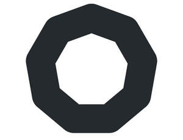

Trade Mark Journal No.2025/028 11 July 2025
UK00004226730 30 June 2025 (9,35,36)

International priority date claimed: 13 January 2025
(European Union Intellectual Property Office (EUIPO))
(019130477)
- Class 9
- Mobile applications; application software for mobile devices; downloadable mobile applications for information management and data transmission; payment software; magnetic payment cards; e-payment software; payment cards being magnetically encoded.
- Class 35
- Accounting; provision of an online marketplace for buyers and sellers of goods and services; compilation of computer databases; systemization of information into computer databases; compilation of information into computer databases; book-keeping and accounting services; administration, billing and reconciliation of accounts on behalf of others; drawing up of statements of accounts; assistance and advice regarding business management; advisory and consultancy services related to the aforementioned services.
- Class 36
- Credit card and debit card services; processing of debit card and credit card payments; issuance of credit cards; services related to debit cards, credit cards, payment cards, and electronic payment cards; banking services; bank account services; international banking services; electronic banking services; banking services relating to the transfer of funds from accounts; banking services relating to the electronic transfer of funds; automatic payment services; electronic payment services; bill payment services; insurance services; information services relating to the automated payment of accounts; automated payment of accounts; advisory and consultancy services related to the aforementioned services.
Holvi Payment Services Oy
Representative: Osborne Clarke LLP